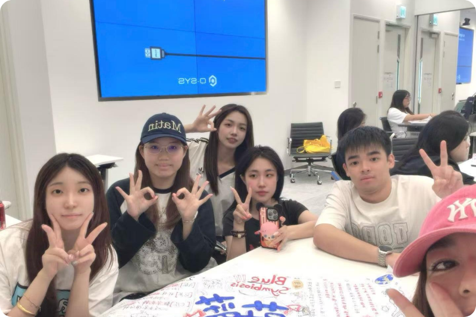

把被海洋遗落的材料，带回可持续生活
蔚蓝共生计划是一支关注海洋微塑料治理与数字文创的跨学科团队。我们联合海洋研究、材料工程、产品设计与数字技术，将真实打捞的海洋塑料转化为可被看见、被使用、被持续追溯的文创产品。
从 AI 无人打捞船到 NFC 数字护照，我们希望用清晰可信的溯源体验，让每一次消费都成为一次温柔而具体的海洋守护。
海洋研究
材料再生
数字溯源
让海洋微塑料治理成为一场有科技、有温度、也有想象力的共创行动。
蔚蓝共生计划是一支关注海洋微塑料治理与数字文创的跨学科团队。我们联合海洋研究、材料工程、产品设计与数字技术，将真实打捞的海洋塑料转化为可被看见、被使用、被持续追溯的文创产品。
从 AI 无人打捞船到 NFC 数字护照，我们希望用清晰可信的溯源体验，让每一次消费都成为一次温柔而具体的海洋守护。
不同专业的人，因为同一片海相遇。
联合发起人 · 海洋策略
负责海洋治理项目与长期生态合作，让每个行动都落到真实海域。
材料工程师 · 再生技术
专注回收塑料的纯化、造粒与安全应用，寻找材料的新生命周期。
产品设计师 · 文创体验
把海洋故事转译成可触摸、可佩戴、值得分享的设计语言。
数字架构师 · NFC 溯源
搭建从芯片到数字护照的可信链路，让每件作品都有自己的海洋档案。
数据研究员 · 生态监测
整理海洋监测数据与打捞记录，为每一次材料再生提供可靠依据。
技术支持
连接公众、伙伴与海洋行动，让更多人加入可持续生活的共创网络。
